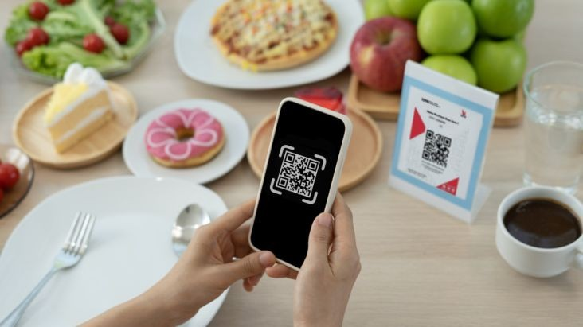
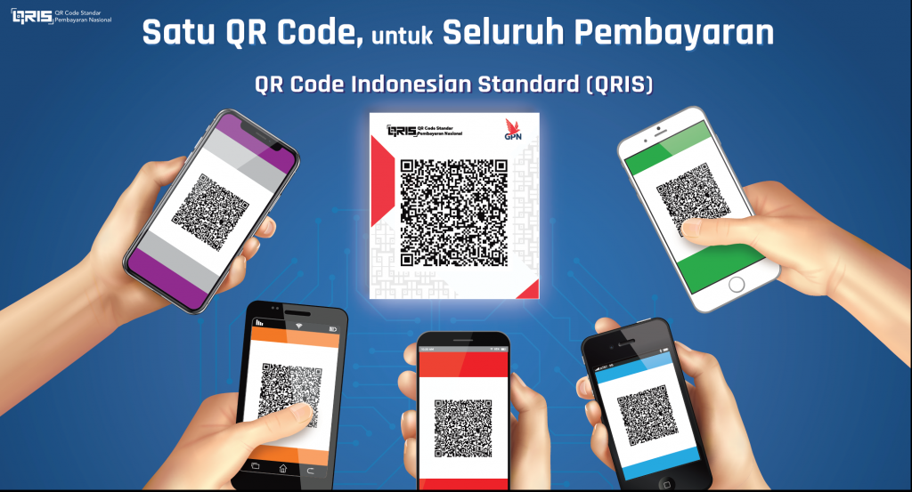

Apa itu QRIS ?

QRIS (Quick Response Code Indonesian Standard) adalah standar
pembayaran digital berbasis kode QR yang dikembangkan oleh Bank
Indonesia untuk mempermudah transaksi non-tunai. Dengan QRIS,
pengguna dapat melakukan pembayaran di berbagai merchant hanya
dengan memindai satu kode QR, tanpa perlu khawatir tentang
kompatibilitas dengan aplikasi pembayaran yang digunakan. QRIS
mendukung berbagai layanan keuangan seperti e-wallet, mobile
banking, dan dompet digital lainnya, sehingga transaksi menjadi
lebih cepat, mudah, dan aman.
Salah satu keunggulan utama QRIS adalah kemampuannya untuk
menyatukan berbagai metode pembayaran dalam satu sistem yang
terintegrasi. Sebelum QRIS diperkenalkan, merchant harus menyediakan
kode QR yang berbeda untuk setiap penyedia layanan pembayaran, namun
dengan QRIS, cukup satu kode QR yang dapat menerima pembayaran dari
semua aplikasi yang mendukungnya. Hal ini tidak hanya menguntungkan
pelanggan dengan kemudahan transaksi, tetapi juga membantu pelaku
usaha, termasuk UMKM, dalam mengelola pembayaran secara lebih
efisien tanpa perlu alat tambahan atau biaya administrasi yang
tinggi.
Sejarah QRIS

QRIS (Quick Response Code Indonesian Standard) pertama kali
diperkenalkan oleh Bank Indonesia pada tahun
2019 dengan tujuan untuk menciptakan sistem
pembayaran digital yang lebih mudah, cepat, dan terintegrasi.
Sebelum adanya QRIS, masyarakat dihadapkan dengan berbagai macam
kode QR dari penyedia pembayaran yang berbeda, yang mengharuskan
konsumen untuk memilih aplikasi sesuai dengan merchant yang menerima
pembayaran.
Dalam upaya untuk memajukan sistem pembayaran digital yang inklusif,
QRIS kemudian dihadirkan sebagai solusi tunggal yang memungkinkan
pembayaran dilakukan menggunakan satu kode QR yang dapat diterima
oleh berbagai aplikasi pembayaran, seperti e-wallet, mobile banking,
dan dompet digital lainnya.
Sejak peluncuran QRIS, Indonesia semakin berkomitmen untuk
mendorong adopsi transaksi non-tunai di seluruh lapisan
masyarakat, baik dari kalangan konsumen maupun pelaku usaha, terutama UMKM.
Cara Pakai QRIS

Menggunakan QRIS untuk bertransaksi sangat mudah. Berikut adalah
langkah-langkah untuk menggunakan QRIS:
-
Pastikan Aplikasi Pembayaran Sudah Terpasang:
Unduh dan install aplikasi pembayaran yang mendukung QRIS, seperti
e-wallet atau mobile banking.
-
Pilih Merchant yang Menerima Pembayaran QRIS:
Cari toko atau layanan yang menampilkan kode QRIS untuk melakukan
pembayaran.
-
Scan Kode QRIS: Buka aplikasi pembayaran dan
pilih opsi untuk memindai kode QR. Arahkan kamera aplikasi ke kode
QRIS yang ditampilkan di merchant.
-
Masukkan Jumlah Pembayaran: Setelah QR dipindai,
aplikasi akan menampilkan informasi pembayaran. Masukkan jumlah
yang sesuai jika diperlukan.
-
Konfirmasi Pembayaran: Periksa rincian transaksi
dan konfirmasi pembayaran. Pembayaran akan diproses secara instan.
QRIS memudahkan transaksi tanpa uang tunai dan memberikan kenyamanan
dalam melakukan pembayaran di berbagai tempat hanya dengan satu kode
QR.
Manfaat QRIS
QRIS memberikan berbagai manfaat baik bagi pengguna maupun merchant.
Berikut adalah beberapa manfaat utama QRIS:
-
Mudah dan Cepat: Pembayaran dapat dilakukan hanya
dengan memindai satu kode QR, tanpa perlu membawa uang tunai atau
kartu fisik.
-
Inklusif: QRIS mendukung berbagai aplikasi
pembayaran digital, seperti e-wallet dan mobile banking, sehingga
dapat digunakan oleh banyak orang dengan aplikasi yang mereka
pilih.
-
Memudahkan UMKM: Dengan hanya menggunakan satu
kode QR, merchant, terutama UMKM, tidak perlu menyediakan banyak
kode QR dari berbagai penyedia layanan pembayaran.
-
Transaksi Aman: QRIS menggunakan teknologi
enkripsi untuk memastikan transaksi aman dan terhindar dari
potensi penipuan.
-
Pengelolaan Pembayaran yang Efisien: QRIS
membantu merchant dalam mengelola transaksi secara lebih efisien
tanpa perlu perangkat tambahan, seperti mesin EDC atau sistem
pembayaran lainnya.
Secara keseluruhan, QRIS memberikan kenyamanan, efisiensi, dan
keamanan dalam melakukan transaksi digital, menjadikannya pilihan
yang semakin populer di Indonesia.